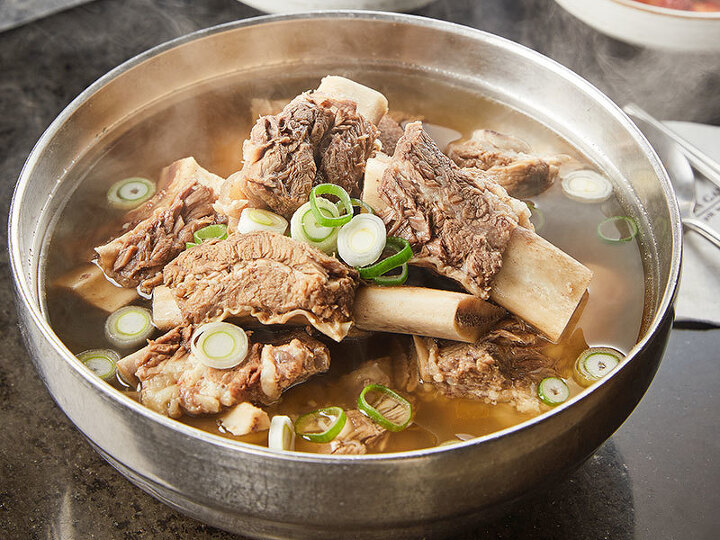

오늘 처음으로 국밥을 직접 만들어보았다.
대한민국의 국물 요리이자 소갈비로 만든 육탕(肉湯) 음식. 함경도에서는 가릿국밥으로 별칭으로 가리탕이라고도 하나, 흔히 갈비탕으로 잘 알려져 있다.
갈비에 고기 국물을 내어서 만든 음식. 돼지갈비보다는 거의 소갈비를 쓰는 편이다. 갈비와 양지 등을 오랜 시간 동안 우려내고 국간장과 소금, 양념 등을 넣고 끓인다. 대체로 고기가 붙은 뼈를 건져먹고 나서 밥을 말아 먹어 마무리를 하는 편이지만, 식성에 따라 냉면이나 당면사리 등을 넣어서 먹을 수 있다.

갈비의 경우 주로 스테이크나 튀김 등에 쓰이는 소의 상등육, 불고기나 산적 등으로 쓰이는 소의 중등육, 그리고 국물이나 탕, 찜 등으로 쓰이는 소의 보통육과는 달리 구이는 물론 국, 탕으로의 조리가 공용적으로 가능하기 때문에 갈비구이와 갈비탕, 갈비찜 등이 나올 수 있다.